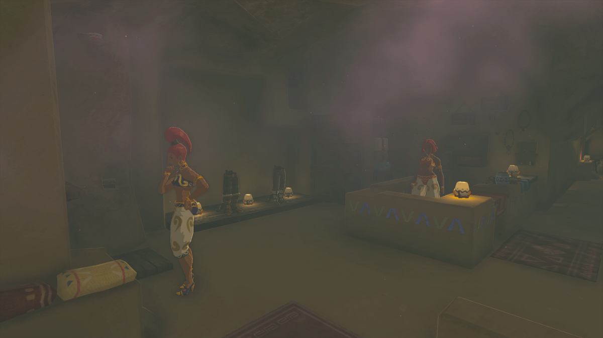
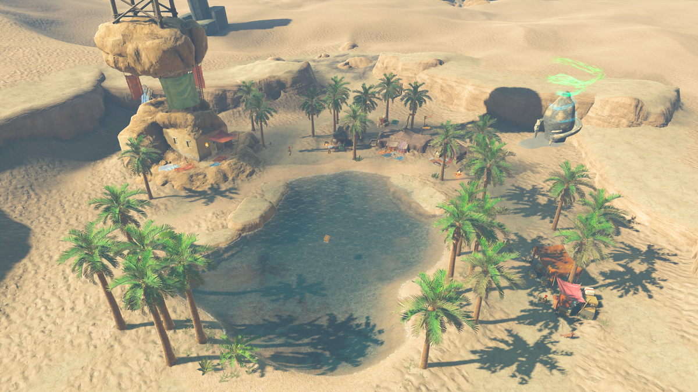

图：雷之贤者露珠——打完吉波得女王，露珠立下誓言。
先说结论：练箭、守城、点红柱
格鲁德小镇被沙暴和吉波得围住了，露珠在北边遗迹练箭。先去避难所找人，再去遗迹帮露珠练箭，接着卡拉卡拉集市、小镇三处防御战全打赢，按壁画谜语点亮三根红柱升起雷之神殿，给四个电池充能、击败吉波得女王。
| 阶段 | 要做的事 |
|---|---|
| 第一段：格鲁德避难所 | 找露珠的副手，露珠在北格鲁德遗迹 |
| 第二段：北格鲁德遗迹 | 帮露珠练箭 |
| 第三段：卡拉卡拉集市 | 吉波得群来袭，防御战 |
| 第四段：格鲁德小镇 | 三处巢穴防御战 |
| 第五段：避难所壁画 | 按谜语点亮三根红柱 |
| 第六段：雷之神殿 | 四个电池充能，击败吉波得女王 |
接取与奖励
| 项目 | 内容 |
|---|---|
| 接取 | 监视堡垒接下四地调查后，去格鲁德小镇 |
| 位置 | 格鲁德沙漠 · 格鲁德小镇 · 雷之神殿 |
| 前置 | 四地调查委托 |
| 奖励 | 雷之贤者露珠加入、雷电箭、心之容器、露珠的誓言 |
| 后续 | 格鲁德沙暴解除；回监视堡垒继续其他三条线 |
出发前准备
| 准备 | 说明 |
|---|---|
| 耐热耐寒 | 沙漠白天热、夜里冷，昼夜温差大，两样都备 |
| 箭 | 多带，露珠的雷要靠箭引 |
| 料理 | 回血、加攻击，防御战和首领战都用得上 |
| 耐热装 | 小镇秘密俱乐部有沙漠男装卖，耐热 |

图：格鲁德小镇的秘密俱乐部——店里卖沙漠男装，耐热，防御战前可以先来一件。
第一步：格鲁德避难所找人
1格鲁德小镇在沙暴里，先进沙漠避难所：三条路——王座后面的密道、西北街小孩带的路、镇南地面洞口通天术上去。
2在避难所里找露珠的副手布莉娅拉：露珠在北格鲁德遗迹训练。
第二步：北格鲁德遗迹练箭
1从小镇往西北走，到北格鲁德遗迹找露珠。
2练箭两步：先射靶子，再射三个靶子中间的岩石——露珠的雷会跟着你的箭落下来，练的就是这个配合。
3练完法乌迪跑来报信：卡拉卡拉集市遇袭。
第三步：卡拉卡拉集市防御战
1传送马亚塔塔神庙过去，或从东边进集市。
2吉波得群杀过来了：和露珠并肩作战，等露珠充能满了再射箭，引雷劈吉波得。
3最后打掉吉波得巢穴，集市保住了。

图：卡拉卡拉集市——沙漠里的绿洲，吉波得群就是从这里杀过来的。
第四步：格鲁德小镇三处防御战
1回格鲁德小镇：三处吉波得巢穴围住了小镇。
2先找队长蒂克部署防线，再找帕达领物资。
3在东、北、西三个入口布防，守住入口、护住露珠的血量。
4三处巢穴全打掉，防御战结束。
第五步：按壁画点亮三根红柱
1回避难所看壁画，谜语的意思是：背对王座，望向沙海里的红柱；用光把红柱连起来，雷之石现身，路就开了。
2第一根红柱在王座后西南方向：打碎挡路的裂石，光束露出来。
3第二根：镜面太低，照不到——转旁边的机关升起柱子，接上镜面。
4第三根：打碎石块，用浮空石加木棍接上顶部的开关，转动柱子对准方向。
5三道光连成三角，中央升起机关；射机关、露珠引雷，雷之神殿升起来。
第六步：雷之神殿四个电池
1殿口先打一场吉波得女王：打掉四分之一血她就撤了；紫球封住的门，用雷箭射开。
2神殿里用镜子反射阳光开门、调镜面角度接通光路，给四个电池充能。
首领战：吉波得女王
1只有露珠的雷能伤她：等她身上发白（易伤）再打，第二发雷能把她打晕。
2半血后四角冒出四个吉波得巢穴：先毁掉巢穴，阳光照进来能杀吉波得。
3她还会放沙龙卷、飞上天、放空中追踪沙流，躲开再打。
4打完拿心之容器，露珠成为雷之贤者，沙暴解除。
关键信息
| 项目 | 内容 |
|---|---|
| 格鲁德避难所 | 王座后密道 / 西北街小孩 / 镇南洞口通天术 |
| 北格鲁德遗迹 | 练箭，雷跟着箭落下 |
| 卡拉卡拉集市 | 吉波得群防御战；传送马亚塔塔神庙 |
| 小镇防御战 | 三处巢穴；找蒂克部署、帕达领物资 |
| 三根红柱 | 光连成三角，中央升机关 |
| 雷之神殿 | 四个电池；吉波得女王只有雷能伤 |
容易翻车的地方
- 沙漠只备耐热——夜里冷，耐寒也得备。
- 露珠没充能就射箭——等她充能满了再射，雷才落得准。
- 小镇防御战乱跑——先找蒂克部署、帕达领物资，守住三个入口。
- 红柱照不到——第二根转机关升柱子，第三根浮空石加木棍接顶部开关。
- 吉波得女王硬砍——只有露珠的雷能伤她，等她发白再打。
- 殿口首战打到底——打掉四分之一血她就撤了，别追，紫球门用雷箭开。
一句话总结
练箭、守集市、守小镇，按壁画点亮三根红柱升起雷之神殿，给四个电池充能、击败吉波得女王——露珠成了雷之贤者，沙暴也散了。